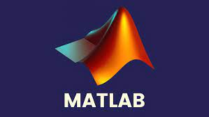

Dentro de la programación también se aplica matemáticas, ejemplo Matlab y Python que son 2 lenguajes de bastante usados.
MATLAB
MATLAB es un entorno de programación y un lenguaje de programación de alto nivel desarrollado por MathWorks. Se utiliza ampliamente en ingeniería, ciencia y matemáticas aplicadas para el análisis de datos, el modelado y la simulación, la visualización de datos, el desarrollo de algoritmos, entre otros.
Python
Python no se enfoca solamente en la matemáticas, pero librerias (herramientas) cómo por ejemplo: NumPy, SciPy y SymPy son ampliamente utilizadas para cálculos numéricos, científicos y simbólicos, respectivamente.